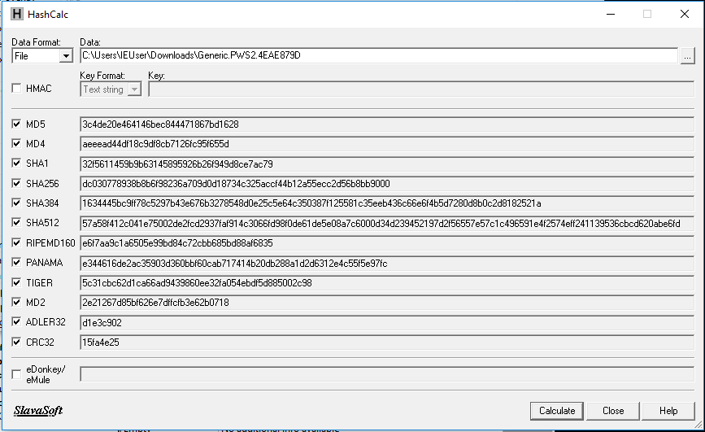
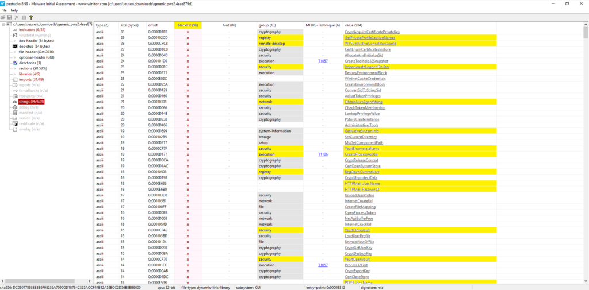
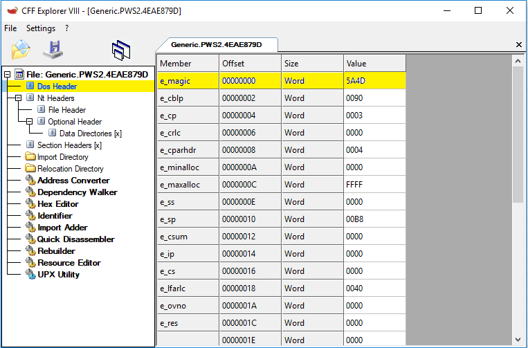
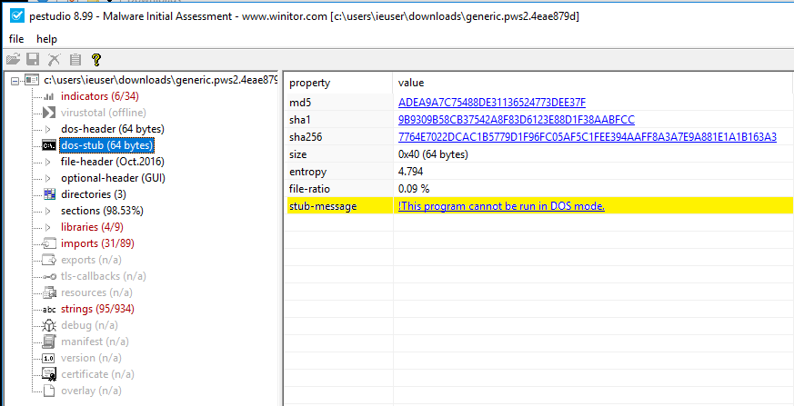
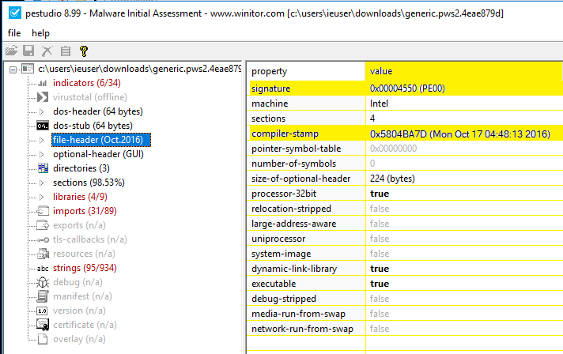
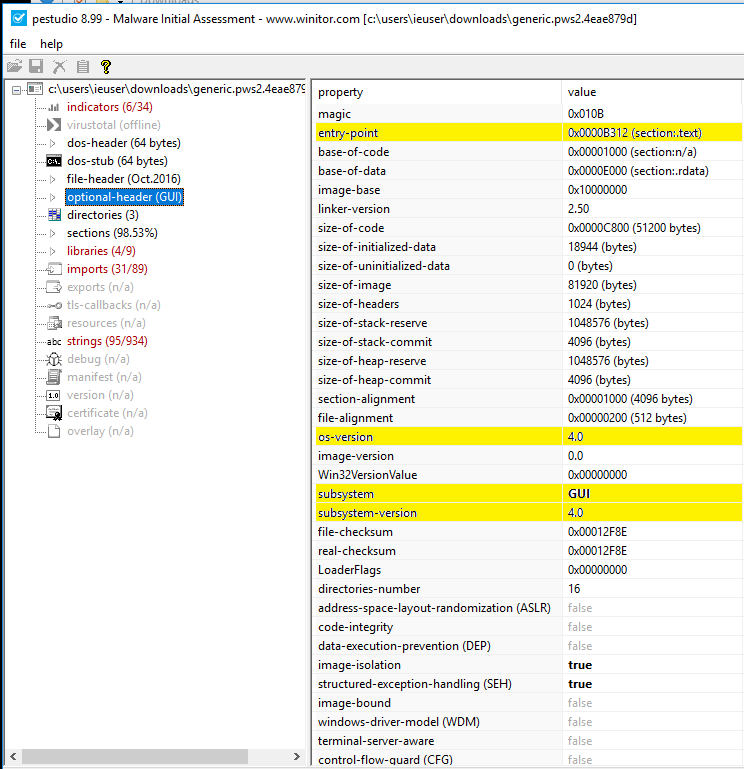
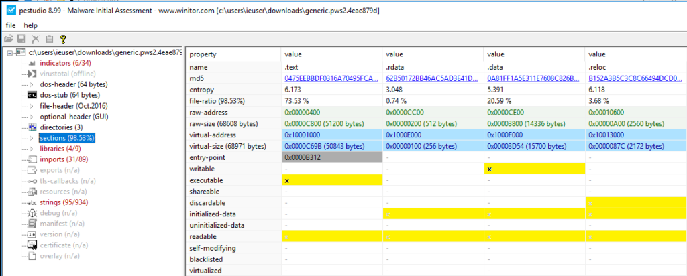
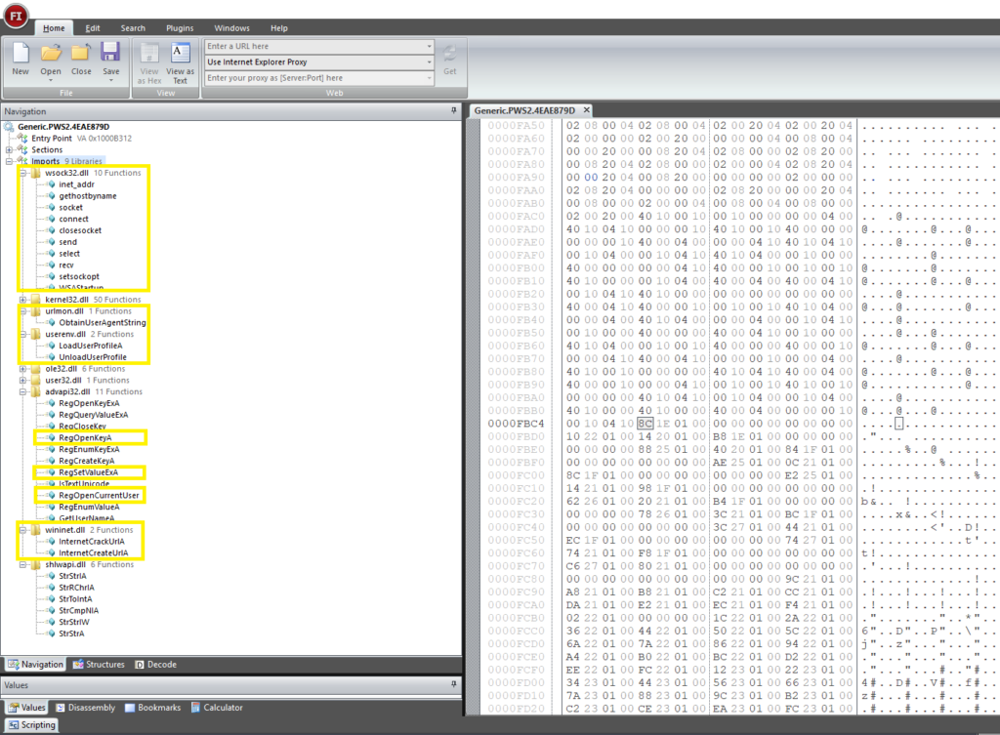
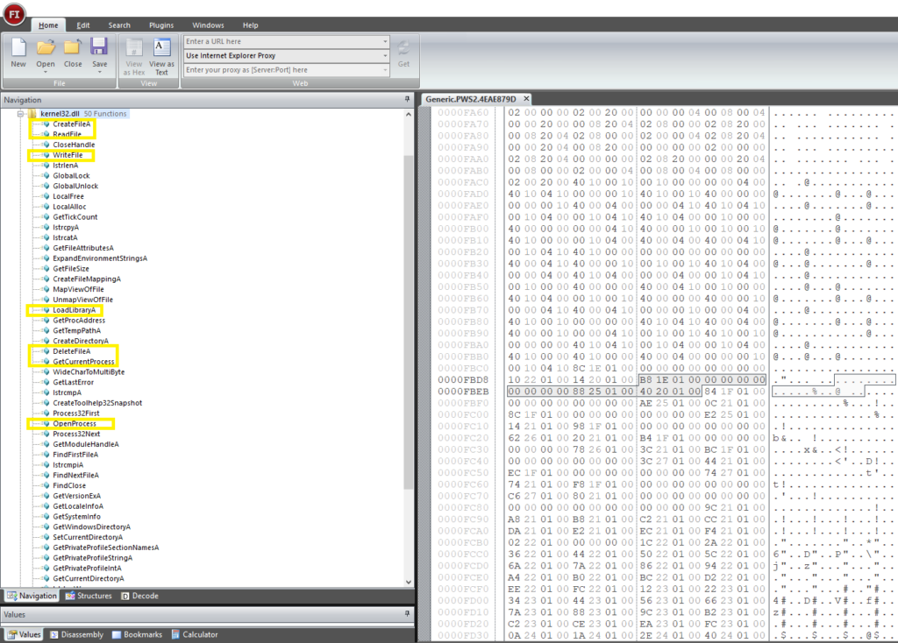

Find out how malware steals your passwords
Today we’re going to cover one aspect of static analysis by looking at an unpacked password stealer that may run silently in the background and may not provide any indication of infection to you as a user.
If you want to know why we analyze malware and the different approaches that exist, check my previous post : Can we know what malware is hiding ?
To better understand, I recommend you do it at the same time but you must already have an isolated and virtual environment so as not to infect your real machine 😉
Personally, I use FLARE-VM which comes with all the necessary tools for malware analysis, but you can use a simple windows virtual machine instead😊. The link to download the malware ☠ is at the bottom. Now let’s jump in ☕️ :
1. Identify the file type, target OS and architecture :
First of all we have to identify the file type because it helps us to know the target OS (Windows or Linux …) and the corresponding architecture (32-bit or 64-bit).
On Windows, an executable is called a PE which stands for Portable Executable and it can be of different formats exe, dll, sys, etc …
In order to do this we’re going to open our malware with 3 different tools : PEstudio, CFF explorer and Exeinfo PE
Good, now we know that is a Win32 DLL (dynamic-link-library) and its an executable because of the MIME type (first-bytes = MZ) and it’s targeting a 32-bit MS Windows (GUI).
2. Generate a hash of the malware :
Next step is to generate a hash of our malware to see if anyone else has analyzed it before, for this either we use the above tools or we use an other one called HashCalc :
As we can see, the tool gives us different hashes (fingerprints) using different algorithms (MD5, SHA1 …), so we just need to search on websites like VirusTotal or HybridAnalysis for previous detections or to check if it has been analyzed before by an other one 😉
3. Get all strings :
Extracting readable characters gives us an idea of what the malware can do. Basically we look for file names, domain names the malware connects to (URLs), IP addresses, Registry keys, etc …
Note that attackers 😈 may also include fake or garbage characters to disrupt our analysis. Again with PEstudio we can extract a lot of information :
 As we can see, we have a few URLs
and a POST request, so probably these domains belong to a C&C server and the malware
communicates with it by sending back credentials and gathered information 😲
As we can see, we have a few URLs
and a POST request, so probably these domains belong to a C&C server and the malware
communicates with it by sending back credentials and gathered information 😲
Now, if we navigate through the blacklist filter, we’ll see that it calls Windows-specific functions as shown below :
We can therefore assume that it uses system functions to enumerate usernames, passwords, services, etc …, and send them back to the attacker 🤔. You get the idea 💡, now look at the rest in detail to fully understand what it does.
4. Analyze the PE header :
Deep analysis of the PE header reveals a lot of information about the malware’s capacity. Basically, we are looking at what subsystem is used, whether the executable is packed or not, and what libraries are required for its functionality.
Before we start, we must first understand the structure of a PE header 🤓. The PE format is a data structure that encapsulates the information necessary for the Windows OS loader to manage the wrapped executable code, it contains :
- DOS header : defines the file as an executable binary.
- DOS stub : message to the user and exit if the binary file is run under MS-DOS.
- File header : defines the signature, compiler-stamp, etc …
- Optional header : information about subsystem, entry-point, etc …
- Sections table : tells how to load the executable in memory.
DOS header :
With CFF explorer, we can see immediately the value of the DOS header :
The first two bytes in hexadecimal contain 5A4D (MZ in little endian) which identifies the file as an executable 👌
DOS stub :
With PEstudio we see the stub message which tells us that this program cannot be run in DOS mode. Note that PE files keep this for backward compatibility with DOS. When run in DOS, a so-called DOS stub is executed which prints this message and exits.
File header :
Awesome, the signature defines the file as a PE 👍, the malware was compiled on Mon Oct 17 04:48:13 2016 😕 and other information that we have already found before 🙂
Optional header :
Great, we got a lot of information here like where the first instruction of the malware is executed (entry-point), the OS version (4.0), the subsystem used (Graphical User Interface), etc …
Sections :
In our case we have 4 sections :
- .text : contains the executable code.
- .rdata & .data : stores data and addresses of particular library functions imported or exported from DLLs.
- .reloc : within this section is a base relocation table needed to fix up virtual addresses.
5. Libraries and imports :
As we can see it uses functions from wsock32.dll and wininet.dll to establish Internet connections with the C&C server through POST requests. What we assumed before is true 😮 and also in order to interact with registries it uses functions from advapi32.dll, possibly for persistence 😧
Now we scroll through the kernel32.dll library which is used to interact with the operating system :
And we see that the malware has the ability to create, read, write, delete files and interact with processes which is expected from a credentials stealer 😎. Note that it uses the LoadLibrary function to dynamically load other libraries, so in other words what we got may not be all the libraries needed for its functionality 😧
To go further in details, we must either reverse it using Ghidra for example, or analyze it dynamically with Ollydbg or IDA Pro.
Well there you go, I hope you liked it 😊
To be continued …
References & Links :
- The malware : Generic.PWS2.rar
- The password : infected
- Download it from my GitHub repository: link